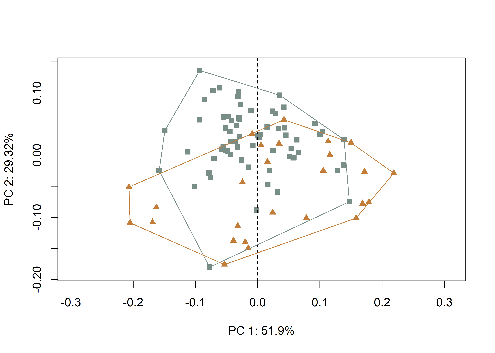
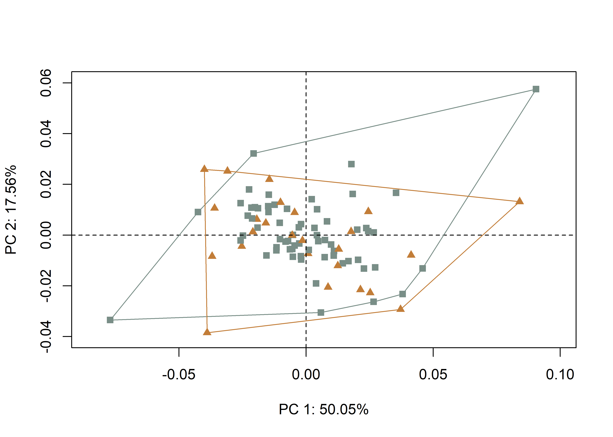

Chapter 3 Caddo bottle asymmetry
In studies of ceramic morphology, an analysis of bilateral/object symmetry can yield useful insights related to design intent, provided it is assumed that the goal of the potter was to produce a symmetrical vessel. Within that framework, deviation from bilateral symmetry (fluctuating asymmetry) might serve as a useful measure of production stability, differential production practices, and/or skill.
3.1 Load packages + data
# load packages
# devtools::install_github("geomorphR/geomorph", ref = "Stable", build_vignettes = TRUE)
library(here)
library(geomorph)
library(tidyverse)
library(wesanderson)
# read GM data
source('readmulti.csv.R')
# read .csv files
setwd("./data")
filelist <- list.files(pattern = ".csv")
coords <- readmulti.csv(filelist)
setwd("../")
# read qualitative data
qdata <- read.csv("qdata.csv", header = TRUE, row.names = 1)
qdata <- qdata[match(dimnames(coords)[[3]],rownames(qdata)),]
land.pairs<-read.csv("asymmetry1.csv",header=TRUE)
ind<-rep(1:length(filelist))3.2 Generalised Procrustes Analysis
# gpa for bilateral (object) asymmetry
res.bilat <- bilat.symmetry(coords,
ind = ind,
object.sym = TRUE,
land.pairs = land.pairs,
RRPP = TRUE,
iter = 9999,
print.progress = FALSE)
summary(res.bilat)##
## Call:
## bilat.symmetry(A = coords, ind = ind, object.sym = TRUE, land.pairs = land.pairs,
## iter = 9999, RRPP = TRUE, print.progress = FALSE)
##
##
## Symmetry (data) type: Object
##
## Type I (Sequential) Sums of Squares and Cross-products
## Randomized Residual Permutation Procedure Used
## 10000 Permutations
##
## Shape ANOVA
## Df SS MS Rsq F Z Pr(>F)
## ind 94 2.74578 0.0292104 0.97516 41.2633 27.1888 1e-04 ***
## side 1 0.00339 0.0033943 0.00121 4.7948 2.8229 0.0012 **
## ind:side 94 0.06654 0.0007079 0.02363
## Total 189 2.81571
## ---
## Signif. codes: 0 '***' 0.001 '**' 0.01 '*' 0.05 '.' 0.1 ' ' 1# symmetric shape
symm.shape <- res.bilat$symm.shape[,1:2,]
# plot all specimens in 2D
plotAllSpecimens(symm.shape)(#fig:symm.shape)Symmetric shape component plotted in 2D.
# asymmetric shape
asymm.shape <- res.bilat$FA.component[,1:2,]
# plot all specimens in 2D
plotAllSpecimens(asymm.shape)(#fig:asymm.shape)Asymmetric shape component plotted in 2D.
3.3 Principal Components Analysis
# geomorph data frame
gdf <- geomorph.data.frame(shape = res.bilat$symm.shape,
ashape = res.bilat$FA.component,
time = qdata$time,
geo = qdata$geo)
# principal components analysis (symmetric)
pca1 <- gm.prcomp(res.bilat$symm.shape)
summary(pca1)##
## Ordination type: Principal Component Analysis
## Centering by OLS mean
## Orthogonal projection of OLS residuals
## Number of observations: 95
## Number of vectors 55
##
## Importance of Components:
## Comp1 Comp2 Comp3 Comp4 Comp5 Comp6 Comp7 Comp8
## Eigenvalues 0.007570417 0.004263066 0.001416815 0.0006429244 0.0003638337 0.0001276505 8.992099e-05 0.0000440987
## Proportion of Variance 0.518337207 0.291886925 0.097007589 0.0440202521 0.0249112508 0.0087400707 6.156781e-03 0.0030193845
## Cumulative Proportion 0.518337207 0.810224132 0.907231721 0.9512519733 0.9761632241 0.9849032948 9.910601e-01 0.9940794599
## Comp9 Comp10 Comp11 Comp12 Comp13 Comp14 Comp15 Comp16
## Eigenvalues 2.837348e-05 1.989325e-05 1.456843e-05 6.460241e-06 5.189178e-06 3.353018e-06 1.431485e-06 1.259563e-06
## Proportion of Variance 1.942697e-03 1.362067e-03 9.974828e-04 4.423248e-04 3.552967e-04 2.295771e-04 9.801206e-05 8.624074e-05
## Cumulative Proportion 9.960222e-01 9.973842e-01 9.983817e-01 9.988240e-01 9.991793e-01 9.994089e-01 9.995069e-01 9.995932e-01
## Comp17 Comp18 Comp19 Comp20 Comp21 Comp22 Comp23 Comp24
## Eigenvalues 1.129967e-06 8.916283e-07 7.605960e-07 7.328722e-07 4.317625e-07 3.499799e-07 3.417719e-07 2.615159e-07
## Proportion of Variance 7.736748e-05 6.104870e-05 5.207708e-05 5.017887e-05 2.956225e-05 2.396270e-05 2.340070e-05 1.790567e-05
## Cumulative Proportion 9.996705e-01 9.997316e-01 9.997837e-01 9.998338e-01 9.998634e-01 9.998874e-01 9.999108e-01 9.999287e-01
## Comp25 Comp26 Comp27 Comp28 Comp29 Comp30 Comp31 Comp32
## Eigenvalues 1.964639e-07 1.742871e-07 1.346487e-07 1.027264e-07 7.960263e-08 5.518451e-08 5.183147e-08 3.970958e-08
## Proportion of Variance 1.345164e-05 1.193323e-05 9.219233e-06 7.033551e-06 5.450295e-06 3.778416e-06 3.548837e-06 2.718866e-06
## Cumulative Proportion 9.999421e-01 9.999540e-01 9.999633e-01 9.999703e-01 9.999757e-01 9.999795e-01 9.999831e-01 9.999858e-01
## Comp33 Comp34 Comp35 Comp36 Comp37 Comp38 Comp39 Comp40
## Eigenvalues 3.480554e-08 2.704179e-08 2.448709e-08 2.280683e-08 1.863232e-08 1.520439e-08 1.418353e-08 1.169823e-08
## Proportion of Variance 2.383093e-06 1.851519e-06 1.676601e-06 1.561556e-06 1.275732e-06 1.041026e-06 9.711287e-07 8.009634e-07
## Cumulative Proportion 9.999882e-01 9.999900e-01 9.999917e-01 9.999933e-01 9.999945e-01 9.999956e-01 9.999966e-01 9.999974e-01
## Comp41 Comp42 Comp43 Comp44 Comp45 Comp46 Comp47 Comp48
## Eigenvalues 9.455562e-09 9.013518e-09 5.704502e-09 5.431208e-09 3.423249e-09 2.465052e-09 1.301040e-09 6.162992e-10
## Proportion of Variance 6.474108e-07 6.171446e-07 3.905803e-07 3.718682e-07 2.343857e-07 1.687791e-07 8.908063e-08 4.219725e-08
## Cumulative Proportion 9.999980e-01 9.999986e-01 9.999990e-01 9.999994e-01 9.999996e-01 9.999998e-01 9.999999e-01 9.999999e-01
## Comp49 Comp50 Comp51 Comp52 Comp53 Comp54 Comp55
## Eigenvalues 5.175306e-10 3.444570e-10 2.021611e-10 7.046849e-11 5.265852e-11 1.440431e-17 3.017118e-18
## Proportion of Variance 3.543469e-08 2.358455e-08 1.384173e-08 4.824892e-09 3.605464e-09 9.862458e-16 2.065784e-16
## Cumulative Proportion 1.000000e+00 1.000000e+00 1.000000e+00 1.000000e+00 1.000000e+00 1.000000e+00 1.000000e+00# set plot parameters
pch.gps <- c(15,17)[as.factor(qdata$geo)]
col.gps <- wes_palette("Moonrise2")[as.factor(qdata$geo)]
col.hull <- c("#798E87","#C27D38")
# plot pca1 (symmetric)
pc.plot1 <- plot(pca1,
asp = 1,
pch = pch.gps,
col = col.gps)
shapeHulls(pc.plot1,
groups = qdata$geo,
group.cols = col.hull)
# principal components analysis (asymmetric)
pca2 <- gm.prcomp(res.bilat$asymm.shape)
summary(pca2)##
## Ordination type: Principal Component Analysis
## Centering by OLS mean
## Orthogonal projection of OLS residuals
## Number of observations: 95
## Number of vectors 74
##
## Importance of Components:
## Comp1 Comp2 Comp3 Comp4 Comp5 Comp6 Comp7 Comp8
## Eigenvalues 0.0006317853 0.0002933997 0.0001702469 0.0001384255 6.158092e-05 0.0000331119 2.551307e-05 1.803874e-05
## Proportion of Variance 0.4462377743 0.2072318371 0.1202474562 0.0977716368 4.349537e-02 0.0233873439 1.802020e-02 1.274098e-02
## Cumulative Proportion 0.4462377743 0.6534696114 0.7737170676 0.8714887045 9.149841e-01 0.9383714153 9.563916e-01 9.691326e-01
## Comp9 Comp10 Comp11 Comp12 Comp13 Comp14 Comp15 Comp16
## Eigenvalues 9.680145e-06 7.921341e-06 5.495267e-06 4.273150e-06 3.089875e-06 2.235342e-06 2.053496e-06 1.753075e-06
## Proportion of Variance 6.837206e-03 5.594941e-03 3.881375e-03 3.018178e-03 2.182417e-03 1.578850e-03 1.450410e-03 1.238219e-03
## Cumulative Proportion 9.759698e-01 9.815647e-01 9.854461e-01 9.884643e-01 9.906467e-01 9.922256e-01 9.936760e-01 9.949142e-01
## Comp17 Comp18 Comp19 Comp20 Comp21 Comp22 Comp23 Comp24
## Eigenvalues 1.118546e-06 8.855684e-07 8.650576e-07 6.634206e-07 6.261257e-07 5.656286e-07 4.135985e-07 3.615984e-07
## Proportion of Variance 7.900425e-04 6.254879e-04 6.110009e-04 4.685822e-04 4.422403e-04 3.995105e-04 2.921298e-04 2.554014e-04
## Cumulative Proportion 9.957042e-01 9.963297e-01 9.969407e-01 9.974093e-01 9.978515e-01 9.982511e-01 9.985432e-01 9.987986e-01
## Comp25 Comp26 Comp27 Comp28 Comp29 Comp30 Comp31 Comp32
## Eigenvalues 2.996029e-07 2.658038e-07 1.932445e-07 1.854086e-07 1.258253e-07 9.088276e-08 7.662942e-08 7.228620e-08
## Proportion of Variance 2.116132e-04 1.877405e-04 1.364910e-04 1.309564e-04 8.887195e-05 6.419161e-05 5.412431e-05 5.105664e-05
## Cumulative Proportion 9.990102e-01 9.991979e-01 9.993344e-01 9.994654e-01 9.995543e-01 9.996185e-01 9.996726e-01 9.997236e-01
## Comp33 Comp34 Comp35 Comp36 Comp37 Comp38 Comp39 Comp40
## Eigenvalues 6.563866e-08 6.134647e-08 4.530956e-08 3.892890e-08 3.216485e-08 2.840649e-08 2.460756e-08 2.013358e-08
## Proportion of Variance 4.636140e-05 4.332977e-05 3.200270e-05 2.749596e-05 2.271843e-05 2.006385e-05 1.738063e-05 1.422060e-05
## Cumulative Proportion 9.997700e-01 9.998133e-01 9.998453e-01 9.998728e-01 9.998955e-01 9.999156e-01 9.999330e-01 9.999472e-01
## Comp41 Comp42 Comp43 Comp44 Comp45 Comp46 Comp47 Comp48
## Eigenvalues 1.951229e-08 1.745601e-08 1.225212e-08 8.463989e-09 5.396809e-09 3.821363e-09 2.672445e-09 1.942821e-09
## Proportion of Variance 1.378177e-05 1.232939e-05 8.653824e-06 5.978220e-06 3.811832e-06 2.699076e-06 1.887581e-06 1.372238e-06
## Cumulative Proportion 9.999610e-01 9.999733e-01 9.999820e-01 9.999879e-01 9.999918e-01 9.999945e-01 9.999963e-01 9.999977e-01
## Comp49 Comp50 Comp51 Comp52 Comp53 Comp54 Comp55 Comp56
## Eigenvalues 1.425486e-09 8.122825e-10 5.683390e-10 2.641307e-10 1.589804e-10 1.610207e-18 1.353921e-18 1.198012e-18
## Proportion of Variance 1.006838e-06 5.737252e-07 4.014248e-07 1.865588e-07 1.122898e-07 1.137309e-15 9.562911e-16 8.461707e-16
## Cumulative Proportion 9.999987e-01 9.999993e-01 9.999997e-01 9.999999e-01 1.000000e+00 1.000000e+00 1.000000e+00 1.000000e+00
## Comp57 Comp58 Comp59 Comp60 Comp61 Comp62 Comp63 Comp64
## Eigenvalues 1.124662e-18 1.001367e-18 9.297823e-19 8.627364e-19 7.829165e-19 6.973350e-19 6.280060e-19 5.937758e-19
## Proportion of Variance 7.943624e-16 7.072777e-16 6.567167e-16 6.093614e-16 5.529835e-16 4.925363e-16 4.435684e-16 4.193912e-16
## Cumulative Proportion 1.000000e+00 1.000000e+00 1.000000e+00 1.000000e+00 1.000000e+00 1.000000e+00 1.000000e+00 1.000000e+00
## Comp65 Comp66 Comp67 Comp68 Comp69 Comp70 Comp71 Comp72
## Eigenvalues 5.422459e-19 4.454458e-19 3.868611e-19 3.439673e-19 2.908055e-19 2.762807e-19 2.332563e-19 2.049672e-19
## Proportion of Variance 3.829950e-16 3.146238e-16 2.732448e-16 2.429483e-16 2.053995e-16 1.951405e-16 1.647518e-16 1.447708e-16
## Cumulative Proportion 1.000000e+00 1.000000e+00 1.000000e+00 1.000000e+00 1.000000e+00 1.000000e+00 1.000000e+00 1.000000e+00
## Comp73 Comp74
## Eigenvalues 1.804450e-19 1.442499e-19
## Proportion of Variance 1.274505e-16 1.018855e-16
## Cumulative Proportion 1.000000e+00 1.000000e+00# plot pca2 (asymmetric)
pc.plot2 <- plot(pca2,
asp = 1,
pch = pch.gps,
col = col.gps)
shapeHulls(pc.plot2,
groups = qdata$geo,
group.cols = col.hull)
3.4 Define models
A residual randomization permutation procedure (RRPP; n = 10,000 permutations) was used for all Procrustes ANOVAs (Adams and Collyer 2015; Michael L. Collyer and Adams 2018), which has higher statistical power and a greater ability to identify patterns in the data should they be present (Anderson and Ter Braak 2003). To assess whether shape changes with size (allometry), and differs by group (region), Procrustes ANOVAs (Goodall 1991) were also run that enlist effect-sizes (zscores) computed as standard deviates of the generated sampling distributions (M. L. Collyer, Sekora, and Adams 2015).
3.4.1 Hypothesis
There is a difference in the symmetric shape of Caddo bottles by community of practice through time.
# symmetric shape as a function of geography through time
fit <- procD.lm(shape ~ geo * time,
data = gdf,
print.progress = FALSE,
iter = 9999)
# asymmetric shape as a function of geography through time
fit.asymm <- procD.lm(ashape ~ geo * time,
data = gdf,
print.progress = FALSE,
iter = 9999)3.5 Procrustes ANOVA
# ANOVA: do symmetric Caddo bottle shapes differ by geography through time?
anova(fit)##
## Analysis of Variance, using Residual Randomization
## Permutation procedure: Randomization of null model residuals
## Number of permutations: 10000
## Estimation method: Ordinary Least Squares
## Sums of Squares and Cross-products: Type I
## Effect sizes (Z) based on F distributions
##
## Df SS MS Rsq F Z Pr(>F)
## geo 1 0.14552 0.145522 0.10600 13.4164 4.1132 1e-04 ***
## time 1 0.18208 0.182084 0.13263 16.7872 4.2203 1e-04 ***
## geo:time 1 0.05824 0.058243 0.04242 5.3697 2.6734 0.003 **
## Residuals 91 0.98704 0.010847 0.71895
## Total 94 1.37289
## ---
## Signif. codes: 0 '***' 0.001 '**' 0.01 '*' 0.05 '.' 0.1 ' ' 1
##
## Call: procD.lm(f1 = shape ~ geo * time, iter = 9999, data = gdf, print.progress = FALSE)# ANOVA: do asymmetric Caddo bottle shapes differ by geography through time?
anova(fit.asymm)##
## Analysis of Variance, using Residual Randomization
## Permutation procedure: Randomization of null model residuals
## Number of permutations: 10000
## Estimation method: Ordinary Least Squares
## Sums of Squares and Cross-products: Type I
## Effect sizes (Z) based on F distributions
##
## Df SS MS Rsq F Z Pr(>F)
## geo 1 0.001239 0.0012390 0.00931 0.8782 0.11474 0.4565
## time 1 0.001870 0.0018697 0.01405 1.3253 0.74985 0.2297
## geo:time 1 0.001594 0.0015937 0.01197 1.1296 0.48594 0.3163
## Residuals 91 0.128383 0.0014108 0.96467
## Total 94 0.133086
##
## Call: procD.lm(f1 = ashape ~ geo * time, iter = 9999, data = gdf, print.progress = FALSE)# end of code